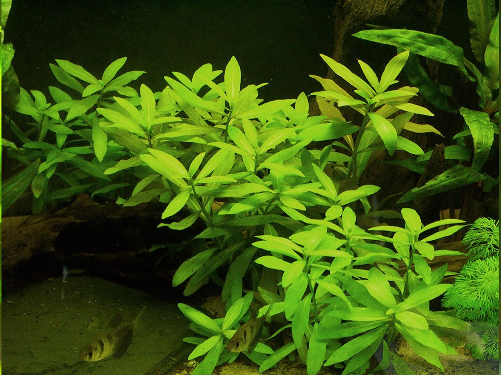
お店のこと
お米のごはんと、魚のいるカフェ。
おくどcaFeは、愛知県一宮市桜にあるお店です。紹介ブログによると、2025年7月にオープンした、お米を主役にしたごはんカフェで、店内の水槽の魚を眺めながら食事ができるのが特徴とされています。
オーナーさんは魚がお好きな方で、水槽の魚の名前や説明を来店者に教えてくれたという紹介もあります。入口付近にはメダカ、駐車場の近くには金魚がいる、とも紹介されています。
情報源: 個人ブログ(2025年7月) / 個人ブログ(モーニング紹介) / Instagram
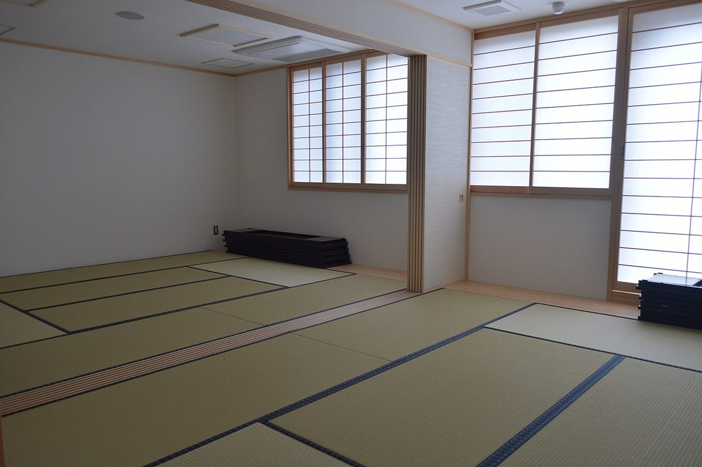
店名「おくど」について
「おくど」は一般に、かまど(竈)を指す言葉です。ただし、お店がこの名前に込めた意味は確認できていません。このページの「おくどの火のぬくもり」という言い回しは、制作側のイメージです。
メニュー
朝のごはんは、おにぎり・おかゆ・卵かけごはん。
紹介ブログによると、モーニングは次のようなセットが紹介されています(時期により変わる可能性があります)。
おにぎりセット
おにぎり、茶碗蒸し、お味噌汁。具を選べるとの紹介があります。
おかゆセット
おかゆ、茶碗蒸し、お味噌汁。
卵かけごはんセット
生卵とごはん、お味噌汁。
小鉢は2品を選ぶ形式との紹介もあります。価格・提供時間・最新のメニューは 準備中(お店の最新情報はInstagramをご覧ください)。
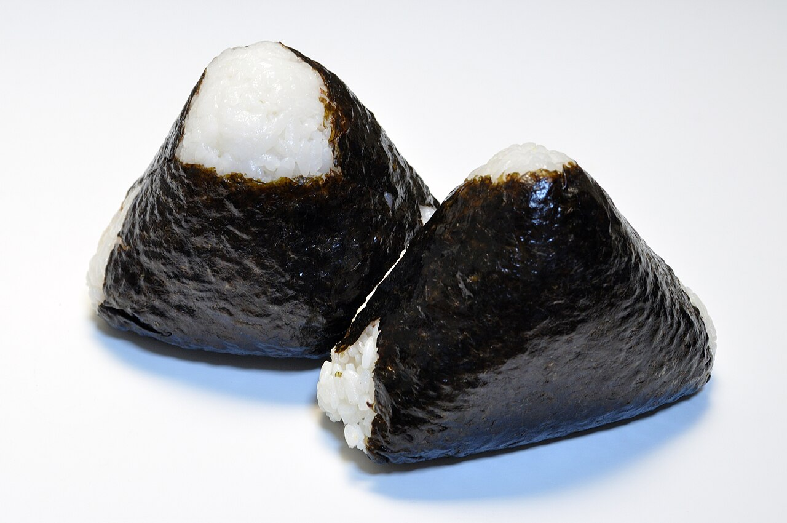

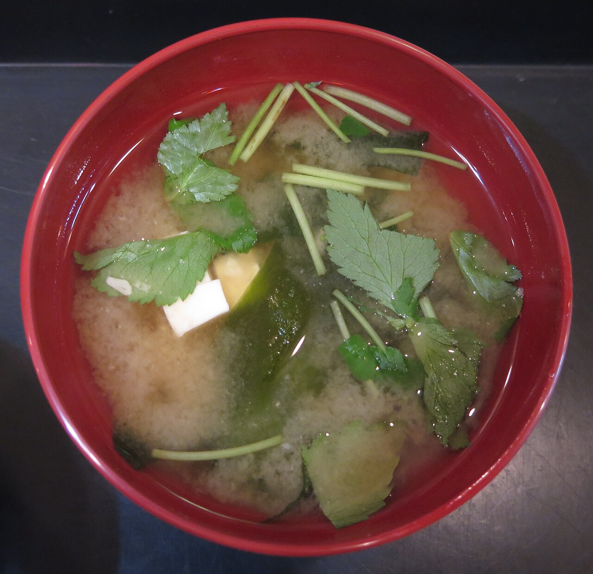
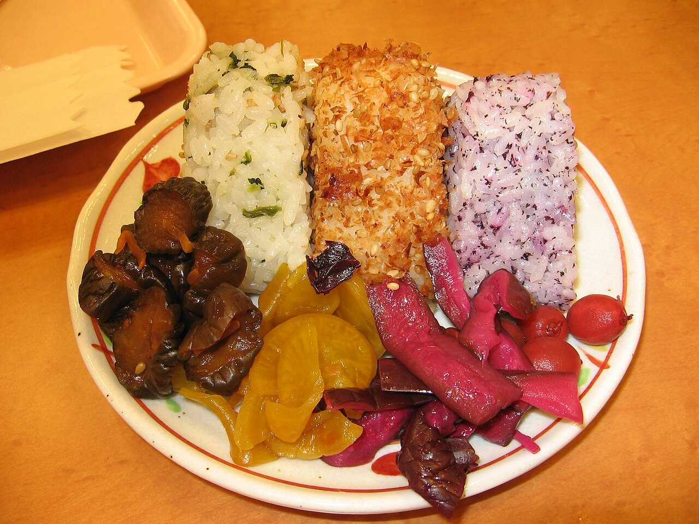
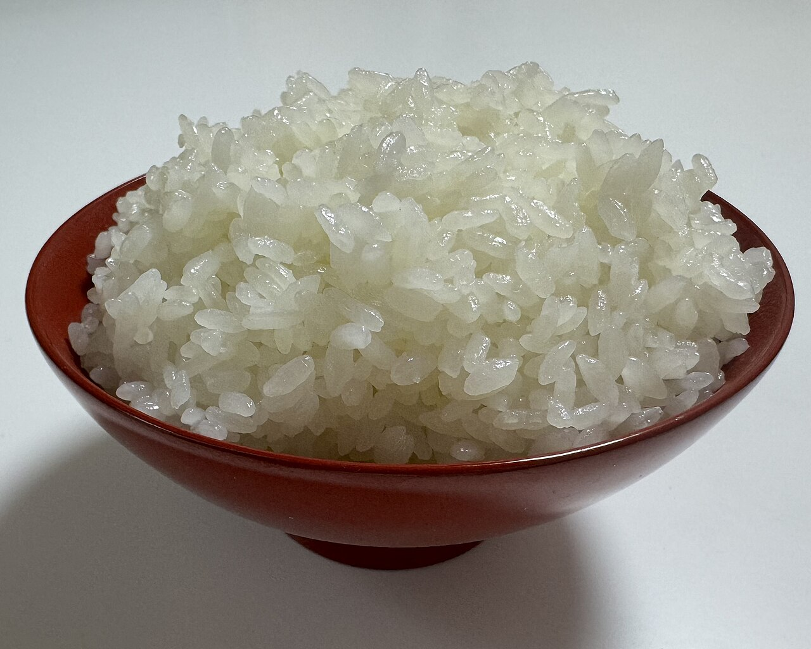
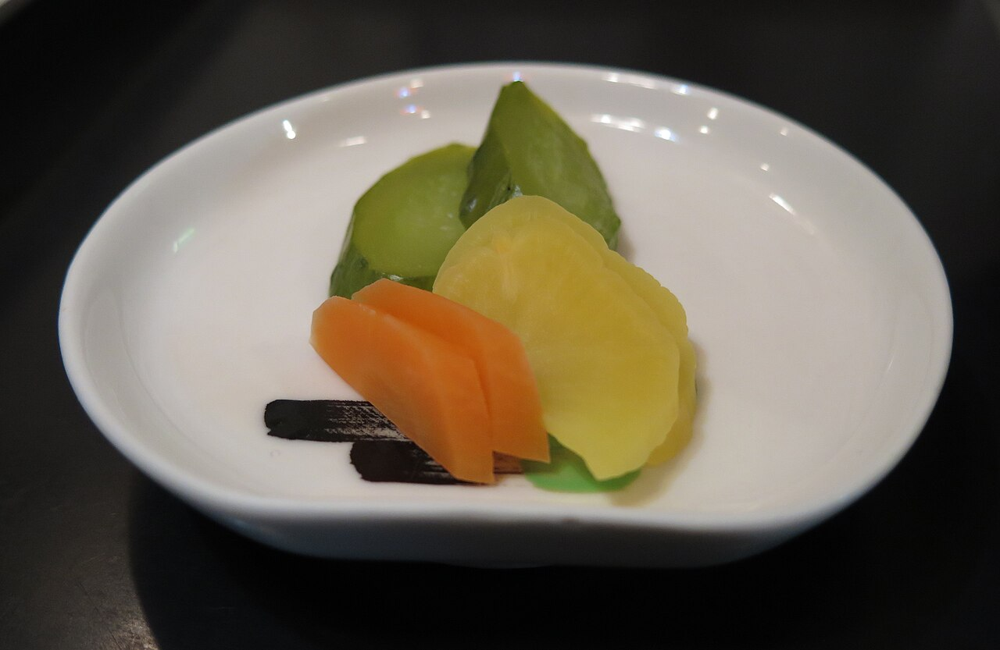
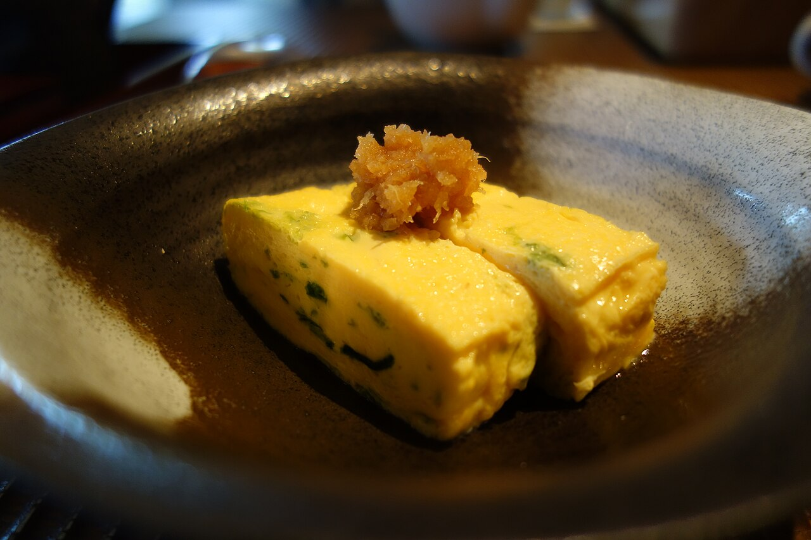
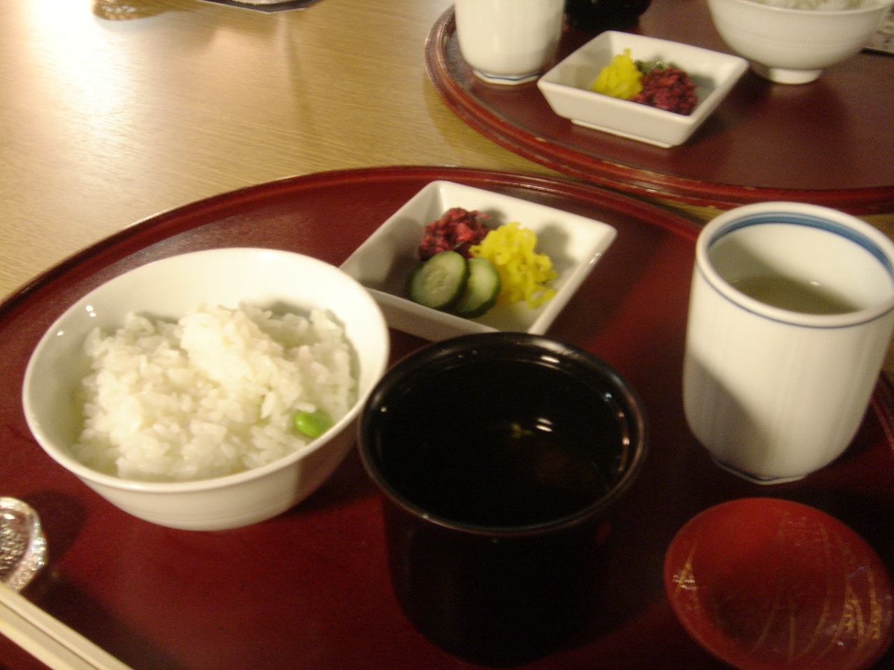
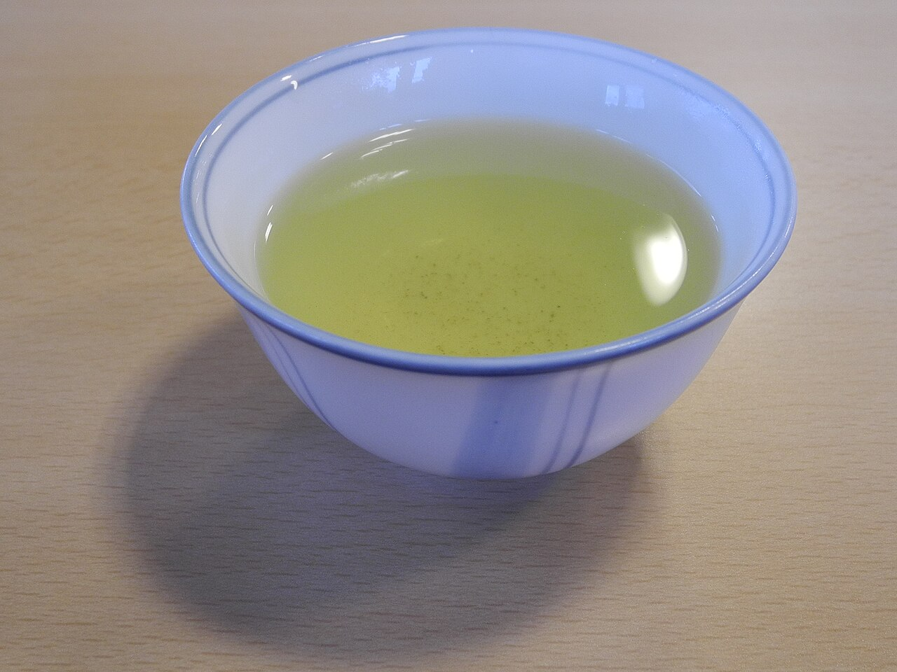
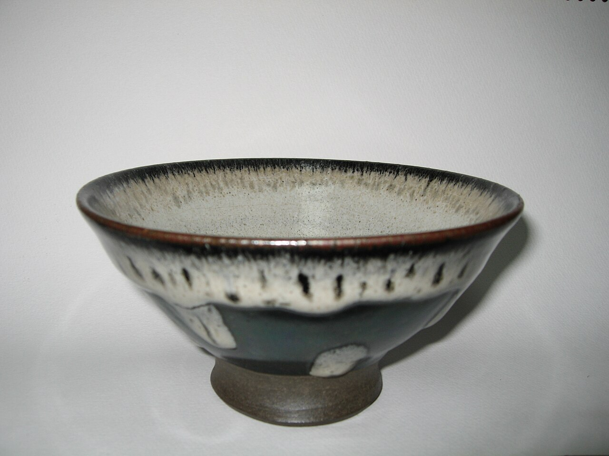
口コミ
こんな声が届きそうなお店です。
以下は制作側が作成した「イメージ例」で、実在のお客様の声ではありません。
朝のおにぎりとお味噌汁で、ほっとできました。茶碗蒸しがうれしいです。
水槽の魚を眺めていたら、ついゆっくりしてしまいました。子ども連れでも安心できそうです。
落ち着いた木のぬくもりの店内で、やさしい味のごはんをいただきました。